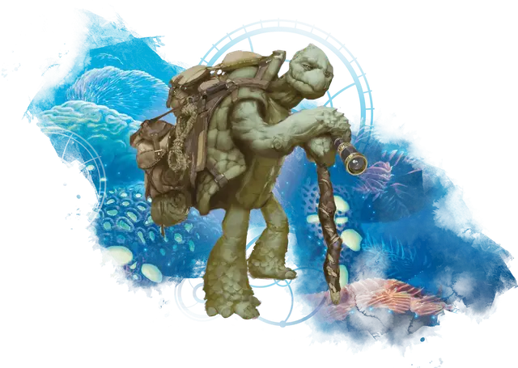

Тортл
Tortle

Я рыбу большую поймал.
Хорошего друга ищу теперь,
Трапезу чтоб разделить.
— Тортлское Хайку
То, что многие Тортлы считают просто жизнью, другие могут назвать жизнью полной приключений. Тортлы рождаются вблизи песчаных пляжей, но как только они учатся ходить на двух ногах, они становятся кочующими приспособленцами, жаждущими исследовать дикую местность, пережить множество чудес, проверить собственные навыки в деле, и завести новых знакомых.
Жизнь тортла
Тортл вылупляется из толстой скорлупы яйца и первые несколько недель ползает на четвереньках. Его родители, старые, на пороге смерти, проводят то немногое время, что у них осталось, рассказывая истории своим отпрыскам. В течение года, молодой тортл становится сиротой, но не ранее, чем начнет говорить и сможет позаботиться о себе.
Молодой тортл и его братья и сестры наследуют все инструменты, оружие и подарки, оставленные их родителями. Ожидается, что каждый молодой тортл позаботится о себе. Он покидает место своего рождения и находит свой уголок в глуши, где охотится, ловит рыбу и обитает. С каждым годом тортл оттачивает свои навыки. Он заключает дружбу с соседями также уважая их уединение. В какой-то момент, тортл чувствует почти несдерживаемое желание уйти из дома и путешествовать в дальние страны и увидеть мир. Он собирает все свои вещи и отправляется в странствие, возвращаясь месяцы или годы спустя с историями о своих приключениях и новыми навыками.
Когда тортл чувствует надвигающуюся смерть он находит себе пару и продолжает свой род. Тортлы откладывают яйца (количеством от одного до дюжины) в крепком обиталище, обложенной каменными стенами которую легко охранять. Если такой кладки нет, они строят ее. Родители посвящают остаток жизни охране кладки, защищая отпрысков, и посвящая время передаче знаний прежде чем умереть. Когда дети становятся достаточно взрослыми чтобы покинуть кладку они возьмут оружие и инструменты, оставшиеся от родителей и останутся сами по себе.
Убеждения
У тортлов нет своего пантеона богов, но они зачастую поклоняются богам других рас. Это не редкость для тортла слышать истории или легенды, связанные с богом и решить поклоняться этому божеству. В Забытых Королевствах, тортлы особенно привержены Эльдат, Гонда, Латандеру, Саврасу, Селунэ и Тиморы. В Грейхоке, они склоняются к Селестиан, Фарлангуну, Пелору, Фолтусу и Св. Кутберту. Тортлы зачастую избирают Богов Добра в Саге о Копье и Верховных Владык в Эберроне. Среди нечеловеческих божеств, Морадин и Йондала больше всего относятся к тортлам.
Тортлы верят, что ночь и день следят за ними и остальными существами. Луна – это глаз ночи что следит за ними в темноте, и солнце такой же неусыпный глаз дня. Тортлы чувствуют умиротворение тогда, когда один или оба этих глаза взирают на него. Они начинают нервничать и переживать, когда ни одного шара не видно в небе. Тортлам больше всего некомфортно под землей, где ни солнце, ни луна не видны им.
Блаженны дни, когда оба светила видны на небе в одно время. Зачастую тортлы выбирают такие дни чтобы отправится в путешествие по диким землям, или совершить иное опасное деяние.
Искатели приключений в сердце
У тортлов есть поговорка: «Мы носим дома на спине». Панцирь, который они носят, обеспечивает все необходимое им убежище. Вследствие чего, тортлы не чувствуют нужды оставаться в одном месте надолго.
Поселения тортлов в основном используются как собрание, где тортлы общаются друг с другом, делятся полезной информацией, и торгуют с путниками в безопасной численности. Тортлы не рассматривают эти поселения как места, достойные чтобы защищать их ценой своей жизни, и они покинут поселение, как только нужда в нем отпадет.
Большинству тортлов нравится наблюдать как живут другие существа и открывать новые обычаи и способы делать вещи. Желание размножаться не посещает тортла до самой старости, и тортл может проводить десятилетия вдали от родной земли, не чувствуя тоски по дому.
Тортлы принимают простые взгляды на мир. Это чудесное место, и тортлы созерцают его красоту в обыденном. Они живут ради шанса услышать мягкий порыв ветра меж пальмовых листьев, увидеть лягушку, квакающую на листе лилии в пруду, или постоять на переполненном человеческом рынке.
Тортлы любят изучать новые навыки. Они изготавливают собственные инструменты и оружие, и они хороши в строительстве и укреплениях. Они восхищаются произведениями других цивилизованных существ, в частности людей, и могут потеряться на многие годы в городе, изучая его архитектурные чудеса и обучаясь навыкам, которые они могут использовать, когда будут строить форты, чтобы содержать их потомство.
Хотя они проводят значительную часть своей жизни в изоляции, тортлы – социальные существа, которые любят формировать значимые дружеские отношения. Они не имеют врождённой неприязни к представителям других рас. На самом деле, тортлы часто ищут дружбу с не-тортлами, чтобы узнать новые обычаи и новые точки зрения.
Имена тортлов
Тортлы предпочитают простые, гендерно-нейтральные имена состоящие не более чем из двух слогов. Если тортлу по какой-либо причине не нравится его имя, он может сменить его. Тортл может сменить десяток имен за свою жизнь. У тортлов нет фамилий или семейных имен.
Мужские и женские имена: Бака, Вабу, Даму, Гар, Гура, Зопа, Ини, Йог, Кве, Квег, Квотт, Кинлек, Крулл, Лим, Лоп, Нортл, Нулка, Оло, Плокват, Санни, Тибор, Убо, Уок, Яппа.
Особенности тортлов
Ваш персонаж-тортл получает следующие особенности, которые позволяют ему справляться с опасностями жестокого мира.
Увеличение характеристик. Значение вашей Силы увеличивается на 2, а значение Мудрости увеличивается на 1.
Возраст. Молодые тортлы в течение нескольких недель после рождения передвигаются ползком, прежде чем научиться ходить на двух ногах. Они достигают зрелости к 15 годам и живут в среднем 50 лет.
Мировоззрение. Любое.
Размер. Взрослые тортлы ростом от 5 до 6 футов (от 1,5 до 1,8 метра), а весят около 450 фунтов (204 килограмм). Вес их панциря составляют примерно одну треть от их общей массы. Ваш размер — Средний.
Скорость. Ваша базовая скорость ходьбы составляет 30 футов.
Когти. Ваши когти — это природное оружие, которое вы можете использовать, чтобы совершить безоружный удар.
Если вы наносите такой удар, вы причиняете рубящий урон, равный 1к4 + ваш модификатор Силы, вместо дробящего урона, обычного для безоружного удара.
Задерживание дыхания. Вы можете задержать свое дыхание на 1 час за раз. Тортлы не являются естественными пловцами, но они могут оставаться под водой в течение некоторого времени, прежде чем всплыть на поверхность.
Природный доспех. Из-за панциря и формы ваше тело не приспособлено для ношения доспехов. Однако ваш панцирь обеспечивает достаточную защиту; он даёт вам базовый КД 17 (ваш модификатор Ловкости не влияет на это число).
Вы не получаете никакой выгоды от ношения доспехов, но если вы используете щит, то вы можете применять бонус щита как обычно.
Панцирная защита. Действием вы можете спрятаться в свой панцирь. Пока вы спрятаны, вы получаете бонус +4 к КД, а также совершаете с преимуществом спасброски Силы и Телосложения.
Пока вы находитесь в панцире, считается что вы лежите ничком, ваша скорость становится равной 0 и не может быть увеличена, у вас также помеха на спасброски Ловкости, вы не можете использовать реакции, а единственное действие, которое вы можете предпринять — бонусным действием выбраться из панциря.
Инстинкт выживания. У тортлов есть исключительные инстинкты выживания. Вы получаете владение навыком Выживание.
Языки. Вы можете говорить, читать и писать на Акване и Общем.